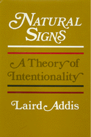

<body bgcolor="#FFFFFF" text="#000000" link="#0000FF" vlink="#CC0000" alink="#CC0000"><center><hr width="350" size="1" align="center" noshade>An argument that the fundamental features of intentionality are "natural" and not "cultural" or "linguistic"<hr width="350" size="1" align="center" noshade><p><a href="https://cdcshoppingcart.uchicago.edu/Cart/ChicagoBook.aspx?ISBN=9780877226314&&PRESS=temple" target="_top">Buy this book!</a> | <a href="https://cdcshoppingcart.uchicago.edu/Cart/Cart.aspx?PRESS=temple" target="_top">View Cart</a> | <a href="https://cdcshoppingcart.uchicago.edu/Cart/Cart.aspx?PRESS=temple" target="_top">Check Out</a></p><p></p></center><!--none//--><h1>Natural Signs</h1>
<H2>A Theory of Intentionality</H2>
<h3>Laird Addis</h3>
<P>cloth 0-87722-631-8 $29.95, Oct 89, <FONT COLOR=#990033>Out of Print</FONT>
<BR> 199 pp
6x9
</P><BLOCKQUOTE><I>"</I>Natural Signs<I> is very clearly written and with admirable style. It combines sound scholarship with innovative philosophical theses. Prof. Addis knows the contemporary literature well, but he does not merely summarize. He advances a rather original theory of the nature of intentionality. He also gives a concise overview of historical themes relevant to his main topic. I know of no pulication which covers the same ground as this book."</I>
<BR>&#151<B>Reinhardt Grossmann</B>, Professor of Philosophy, Indiana University<I></I></BLOCKQUOTE>
<P>With a unique and original defense, Laird Addis presents a detailed theory of intentionality that holds that to be aware of something is to exemplify a property of a sort called a natural sign&#151an entity that by its very nature represents something else. Arguing from an analytic standpoint for a view more commonly found in the phenomenological tradition, the author debates opposing theories, especially those that hold: (1) that to be aware of something is merely to be in a certain relation to it; and (2) that whatever is in the mind only conventionally rather than naturally represents the object of awareness.
<P>Addis argues that the only way to account for the phenomenon known as the unity of thought is to suppose that natural signs are simple entities, even when they represent complex objects. And he maintains that this dualistic philosophy of mind with its thesis of the "irreducibility" of intentionality is, contrary to what many on various sides of the issue suppose, fully consistent with the scientific worldview.
<P>The theory of natural signs also leads to the formulation and defense of a new solution to the ancient problem of how it is possible to think of something that does not exist. While <I>Natural Signs</I> is not a historical study, among the philosophers whose views are considered in some detail are Meinong, Husserl, Russell, Sartre, Bergmann, Sellars, Putnam, Rosenberg, Armstrong, Hochberg, and Searle.
<BR>&nbsp;<h2>Excerpt</h2><P>Excerpt available at <a href="http://www.temple.edu/tempress">www.temple.edu/tempress</a></p>
<BR>&nbsp;<h2>Reviews</h2>
<p><I>"The book is an extremely sophisticated defense of its thesis and sensitive and attentive to the current alternatives in analytical philosophy of mind (Wittgenstein, Putnam, Searle); the book also contains an original and informative discussion of varieties of behaviorism. </I>Natural Signs<I> will be unique among recent contributions to the analytical philosophy of mind and (perhaps especially) appealing to those out side of that tradition as well."</I>
<br>&#151<b>Richard E. Aquila</b>, The University of Tennessee, Knoxville
<BR>&nbsp;<h2>Contents</h2><P>
<P>Preface
<BR><B>Part One: Frame of Reference</B>
<BR>Consciousness and the Starting Place of Philosophy
<BR><B>Part Two: The Theory of Natural Signs</B>
<BR>The Background to Natural Sign Theory &#149 The Arguments for Natural Signs &#149 Objections to Natural Sign Theory &#149 The Intentional Connection &#149 Mental Acts and the Scientific Worldview
<BR><B>Part Three: Going Beyond</B>
<BR>Consciousness and Time &#149 Consciousness and Particularity
<BR>References
<BR>Name Index
<BR>Subject Index
</P><BR>&nbsp;<H2>About the Author(s)</H2>
<P><B>Laird Addis</B> is Professor of Philosophy at the University of Iowa and author of <I>The Logic of Society: A Philosophical Study</I>.</P>
<BR><H2>Subject Categories</H2>
<p><A HREF="/tempress/philosophy.html" TARGET="_top">Philosophy and Ethics</a>
</p>
<p align="center"><a href="https://cdcshoppingcart.uchicago.edu/Cart/ChicagoBook.aspx?ISBN=9780877226314&&PRESS=temple" target="_top">Buy this book!</a> | <a href="https://cdcshoppingcart.uchicago.edu/Cart/Cart.aspx?PRESS=temple" target="_top">View Cart</a> | <a href="https://cdcshoppingcart.uchicago.edu/Cart/Cart.aspx?PRESS=temple" target="_top">Check Out</a></p><p><font face="Arial" size="1"><a href="copyright.html" onMouseOver="window.status='Web Copyright Policy';return true;" onMouseOut="window.status=''" title="Web Copyright Policy">&copy;</a> 2015 <a href="http://www.temple.edu" target="new" onMouseOver="window.status='Link to Temple University home page';return true;" onMouseOut="window.status=''" title="Link to Temple University home page">Temple University</a>. All Rights Reserved. http://www.temple.edu/tempress/titles/663_reg.html</font></p>